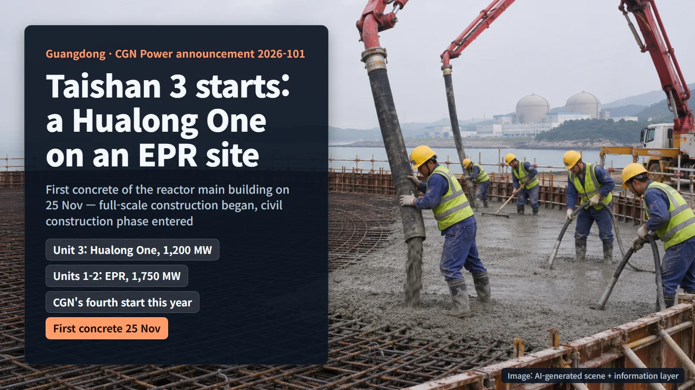
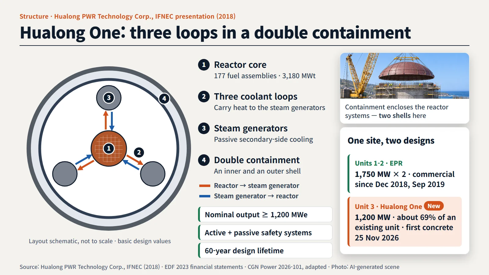
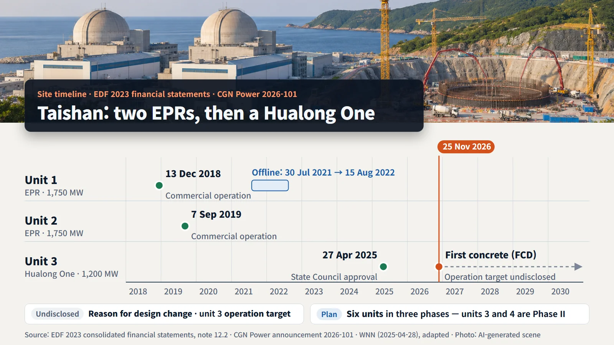
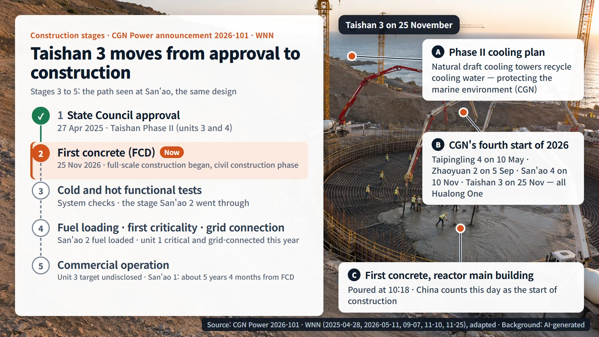

China · New Build
Taishan 3 Pours First Concrete: A Hualong One Joins Two EPRs
First concrete was poured for Taishan 3 on November 25, 2026, putting a Hualong One beside the site's two EPRs; the reason for the change of reactor type has not been published.
Construction of a third reactor has started at the Taishan nuclear power plant in China's Guangdong province. Taishan is where the EPR, originally the European Pressurized Reactor, first went into operation anywhere in the world, yet the new unit 3 is a Hualong One (HPR1000), a Chinese design. When the reactor type changes between the first and second phase of one site, the unit size, the project company and the cooling method change with it. This post looks at the exact stage the announcement describes, how the two designs compare in public documents, and how far the documents go in explaining the change of design.

What the 25 November announcement says: the meaning of first concrete
CGN Power stated in Shenzhen Stock Exchange announcement 2026-101, dated 25 November 2026, that Taishan unit 3 of its subsidiary CGN Taishan No. 2 Nuclear Power Co., Ltd. poured the first concrete of the reactor main building that day. The announcement calls this the first concrete date (FCD) and says the unit began full-scale construction and entered the civil construction phase on that date. World Nuclear News (WNN), citing parent company China General Nuclear (CGN), reported that the first concrete was poured at 10:18.
The FCD is the day concrete is first placed in the foundation of the building that will hold the reactor. Site levelling and excavation come earlier, but Chinese nuclear projects count this day as the start of construction, so the announcement moves unit 3 from an approved project to a reactor under construction. Taishan Phase II, units 3 and 4, was approved at a State Council meeting on 27 April 2025, so about one year and seven months passed between approval and the start of unit 3.
The steps that follow can be seen at another CGN site building the same design. At the San'ao plant in Zhejiang province, unit 2 has checked its systems through cold functional tests and hot functional tests and then completed fuel loading, while unit 1 reached first criticality and grid connection this year and entered commercial operation. San'ao 1 poured first concrete on 31 December 2020 and began commercial operation on 29 April 2026. Calculated, that is about five years and four months. WNN reported that each unit at CGN's Zhaoyuan project in Shandong province is expected to start generating power 50 to 60 months after its construction start. No target date for commercial operation of Taishan 3 appears in the announcement or the reports, so these figures serve as reference values from the same design.
Two designs on one site: a 1,750 MW EPR and a 1,200 MW Hualong One
Start with output. According to the 2023 consolidated financial statements of Électricité de France (EDF), Taishan 1 and 2 are two 1,750 MW EPR reactors. The unit capacity of unit 3 given in the CGN Power announcement is 1,200 MW. Calculated, 1,200 ÷ 1,750 ≈ 0.69: one new unit has about 69% of the output of an existing unit. Unit 4 was also announced at 1,200 MW when it was approved in 2025.
Next, the project company. Units 1 and 2 are owned and operated by Taishan Nuclear Power Joint Venture Company (TNPJVC), in which CGN holds 51%, Guangdong Energy Group 19% and EDF 30%. Unit 3 belongs to CGN Taishan No. 2 Nuclear Power Co., Ltd., a CGN Power subsidiary and a different legal entity from Phase I. The announcement gives no shareholding for this company.
The Hualong One design can be checked in a presentation that Hualong Pressurized Water Reactor Technology Corporation gave at a 2018 meeting of the International Framework for Nuclear Energy Cooperation (IFNEC). The core holds 177 fuel assemblies 12 feet long, core thermal power is 3,180 MWt, and nominal electrical output is at least 1,200 MWe. Calculated, 1,200 ÷ 3,180 ≈ 0.38: about 38% of the heat from the core becomes electricity, and the rest leaves through the cooling systems. Three coolant circuits (three loops) carry heat from the reactor to the steam generators, and the containment has two shells, an inner and an outer one. The safety systems combine active equipment, driven by pumps and power supplies, with passive equipment that removes heat without power, such as passive cooling from the secondary side of the steam generators. The design lifetime is 60 years. These are the basic design values of the Hualong One; the detailed design applied to Taishan 3 is not set out in the announcement.

The path of the EPRs at units 1 and 2
Taishan 1 began commercial operation on 13 December 2018 and Taishan 2 on 7 September 2019.
In 2021, during its second operating cycle, unit 1 stopped for more than a year because of a fuel problem. EDF's record gives the sequence. On 14 June 2021 an increase in noble gas concentration was detected in the primary circuit of unit 1. Noble gases are produced by fission inside the fuel rods, and they leak into the cooling water when a rod loses its seal. EDF wrote that China's Ministry of Ecology and Environment attributed the build-up to a few unsealed fuel rods. On 22 July EDF said that, according to the data available to it, the radiochemical parameters of the primary circuit water were below the regulatory thresholds in force at Taishan, and explained that its operating procedures for the French fleet would lead it to shut the reactor down to assess the situation, while at Taishan the decision belonged to TNPJVC. The operator decided on 30 July to shut the unit down and completed defuelling on 22 August. Inspections showed mechanical wear on certain fuel assembly components, a phenomenon EDF said had already been encountered in several reactors of the French fleet. After a final inspection by the Chinese authorities, unit 1 was reconnected to the grid on 15 August 2022, a little over one year after the shutdown decision.
What this history shows is a process: on a design operating for the first time, wear on fuel assembly components appeared during operation, and the unit restarted after shutdown, inspection and regulatory checks.

The reason for the change of design, and the dates to watch
The reason Phase II moved from the EPR to the Hualong One is stated in none of the documents: the CGN Power announcement, CGN's statement, or the reports of the 2025 State Council approval. The published fact is that the two Phase II units will use the Hualong One. No official document was found that connects the unit 1 outage described above with this choice of design.
What the documents do show is CGN's run of construction starts this year. In WNN's reports, the 2026 starts at CGN projects are Taipingling 4 in Guangdong on 10 May, Zhaoyuan 2 in Shandong on 5 September, San'ao 4 in Zhejiang on 10 November and Taishan 3 on 25 November. The count matches CGN's statement that Taishan 3 is its fourth construction start this year, and all four are Hualong One units.
The cooling method changes in Phase II as well. CGN said Phase II will use high-level water-collecting natural draft cooling towers to recycle cooling water and to protect the marine environment and biodiversity. As calculated above, about 62% of the heat never becomes electricity; the plan is to release that heat to the atmosphere through the towers and reuse the cooling water.

The Taishan site is planned to hold six units built in three phases. The dates to watch are the first concrete of unit 4, the main construction milestones and the commercial operation target of unit 3, and the approval and design of Phase III, units 5 and 6. All three are absent from the public record today.